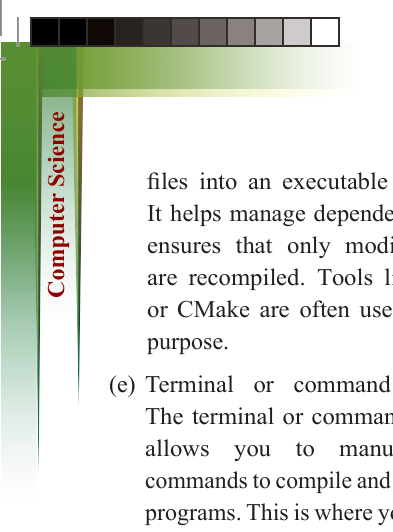
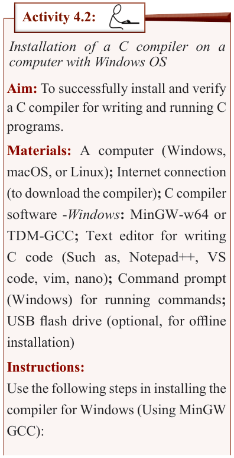

for Secondary Schools
files into an executable program.
It helps manage dependencies and
ensures that only modified files are recompiled. Tools like Make or CMake are often used for this
purpose.
(e) Terminal or command prompt:
The terminal or command prompt allows you to manually run
commands to compile and execute C
programs. This is where you can use
the compiler directly via command-
line interfaces, such as “gcc” for
GCC compiler or “clang” for Clang.
To start programming in C, you need
two essential software tools installed
on your computer: a text editor and a C compiler.
Text editors and source files in C programming

The choice of text editors varies across

different operating systems. For instance:

(a) Windows: Notepad, Notepad++,


Visual Studio Code (VS Code),

Sublime Text.

(b) Linux/macOS: vim, nano, Emacs,


VS Code.

(c) Cross-Platform Editors: VS code,


Atom, Sublime text, and JetBrains

CLion.

The files created using a text editor

are known as source files because they

contain the program’s source code. In C


programming, these files typically have

the “.c” extension (such as program.c).

The C compiler

When you write a C program, the computer


does not understand it directly. The code

you write is called “source code,” and it


is written in a way that humans can read

and understand. However, computers only understand “machine language
(binary code: 0s and 1s)”. Therefore,
the source code must be translated into
machine language using a C compiler,
which generates an executable file that
the computer can run.

Activity 4.2:
Installation of a C compiler on a
computer with Windows OS
Aim: To successfully install and verify a C compiler for writing and running C programs.
Materials: A computer (Windows,
macOS, or Linux); Internet connection
(to download the compiler); C compiler
software -Windows: MinGW-w64 or
TDM-GCC; Text editor for writing
C code (Such as, Notepad++, VS code, vim, nano); Command prompt
(Windows) for running commands;
USB flash drive (optional, for offline
installation)
Instructions:
Use the following steps in installing the
compiler for Windows (Using MinGW
GCC):